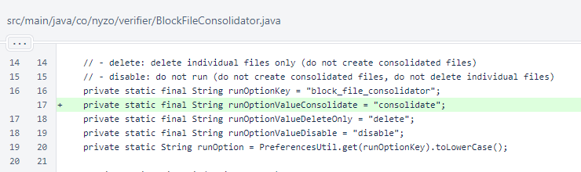
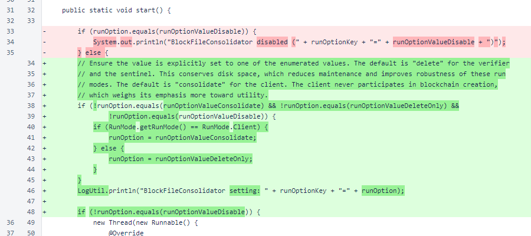
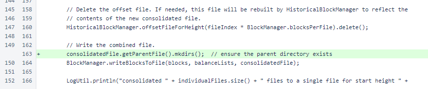

Nyzo version 622 (commit on GitHub) corrects an issue with directory creation in the BlockFileConsolidator.
This version affects the three run modes that use the consolidator: the verifier, the sentinel, and the client.
This is a small update that is both important and deliberately inconsequential for most users.
In version 588, the BlockManager.writeBlocksToFile() method was rewritten for efficiency. In this rewrite, a call to mkdirs() on the parent file was removed (line 220 in the before-commit code). This was not a problem for the individual block files, because creation of the directory for these files is ensured in BlockManager.initialize(). However, this was a problem for consolidated files.
This version corrects the issue of directory creation for consolidated block files. This version also modifies and clarifies the behavior of the BlockFileConsolidator to ensure the corrected behavior does not cause issues for verifiers or sentinels.
In BlockFileConsolidator, a value for the consolidate run option was added. This was an implicit, default behavior before.
In BlockFileConsolidator.start(), the run option is checked. If one of the enumeration values is not specified, the default is applied. For the verifier and sentinel, the default is delete. For the client, the default is consolidate.
This is a change in specified behavior for both the verifier and sentinel. However, consolidated block files are mostly useless for both the verifier and sentinel, and this is not a change in actual behavior for most verifiers and sentinels. Furthermore, if verifiers and sentinels did suddenly begin storing consolidated block files after an extended period of not storing these files, this change in behavior could cause disk-space issues on instances that were not concerned about such issues before.
In BlockFileConsolidator.consolidateFiles(), the directory is now made just before the consolidated file is written. This change corrects the error that was introduced in version 588.
